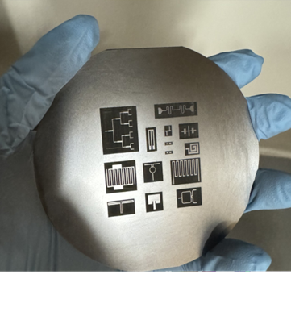
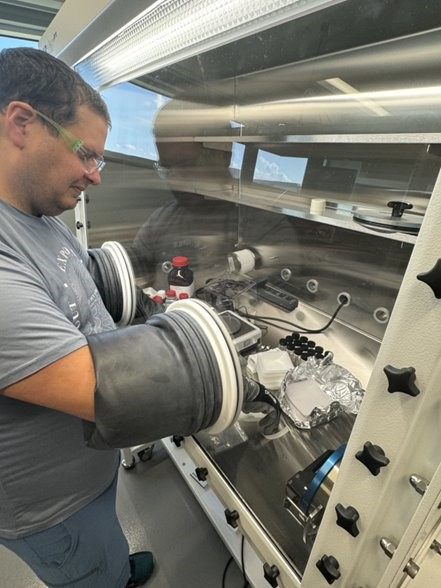
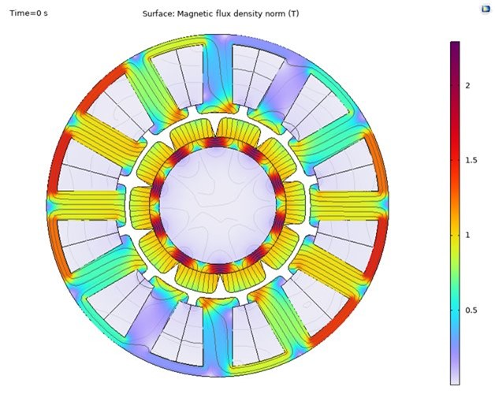

Toggle navigation
01 : Home
02 : Team
03 : Research
04 : Teachings
05 : Capapbilities (Facilities & Equipment)
Toggle Dark Mode
Our laboratory’s mission is to advance the state of the art in magnetic devices and sensors by:

Novel Fabrication Methods for Rapid Prototyping and Characterization

Material Development Leveraging Rapid Synthesis & Characterization

Finite Element Simulations Utilizing Dynamic Material Properties